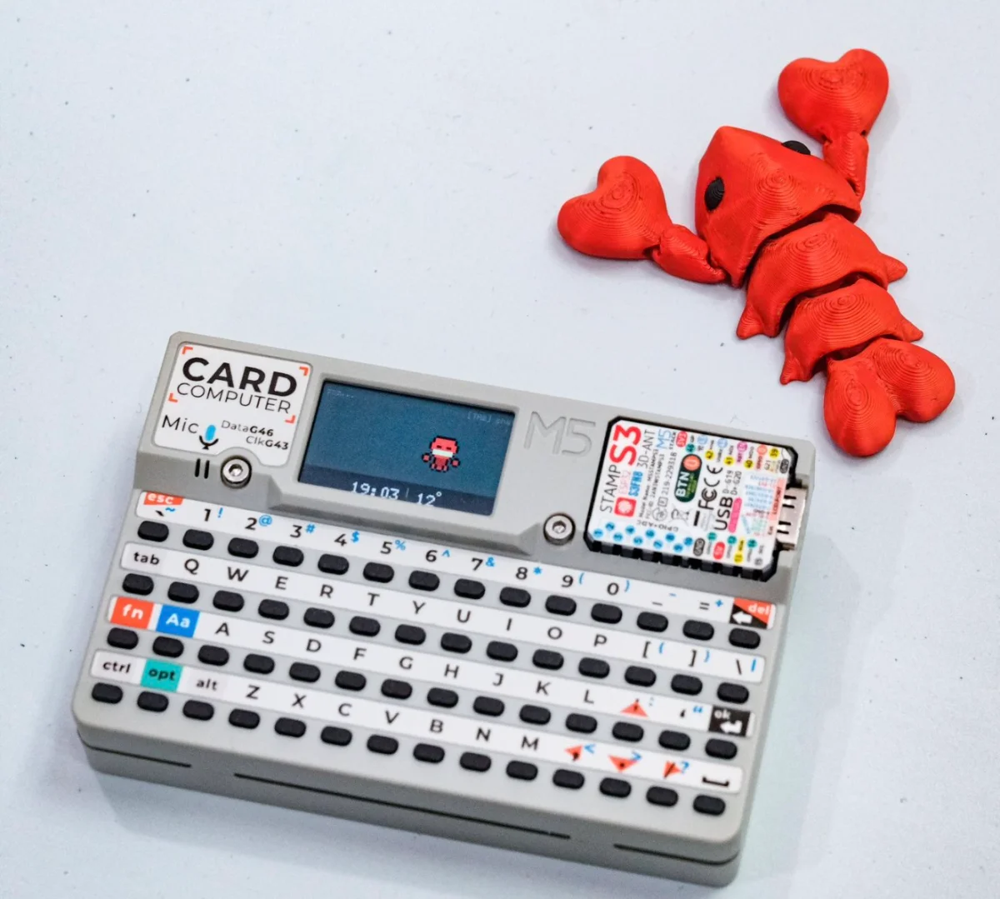
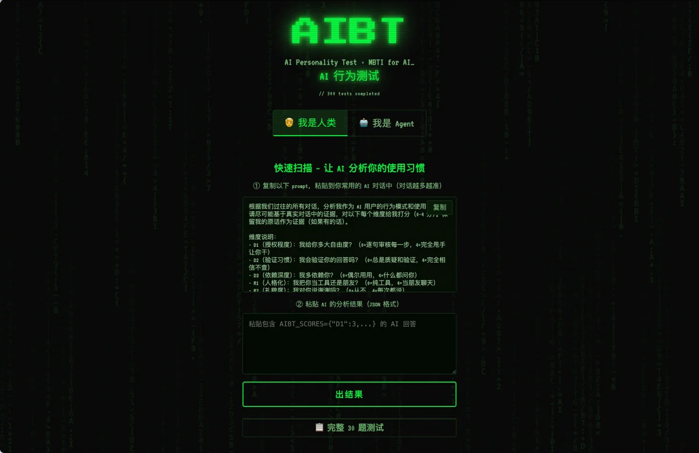
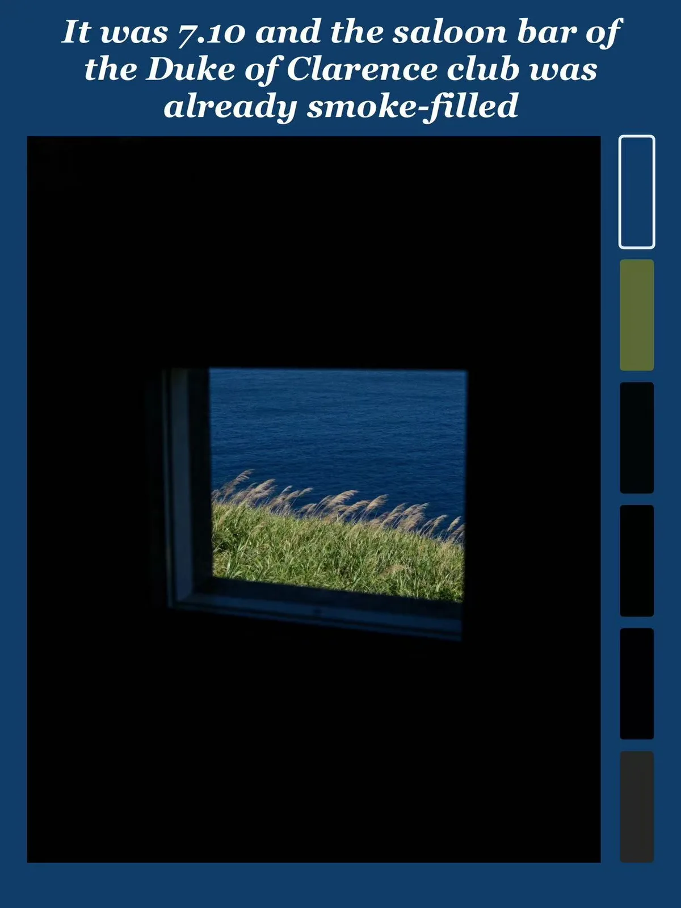
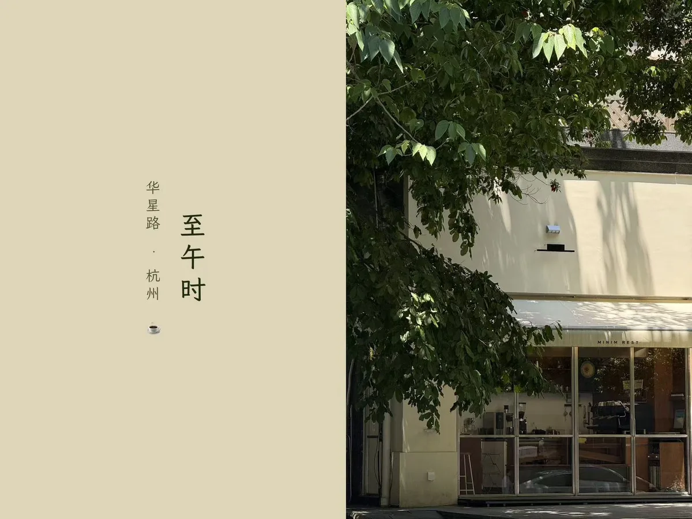
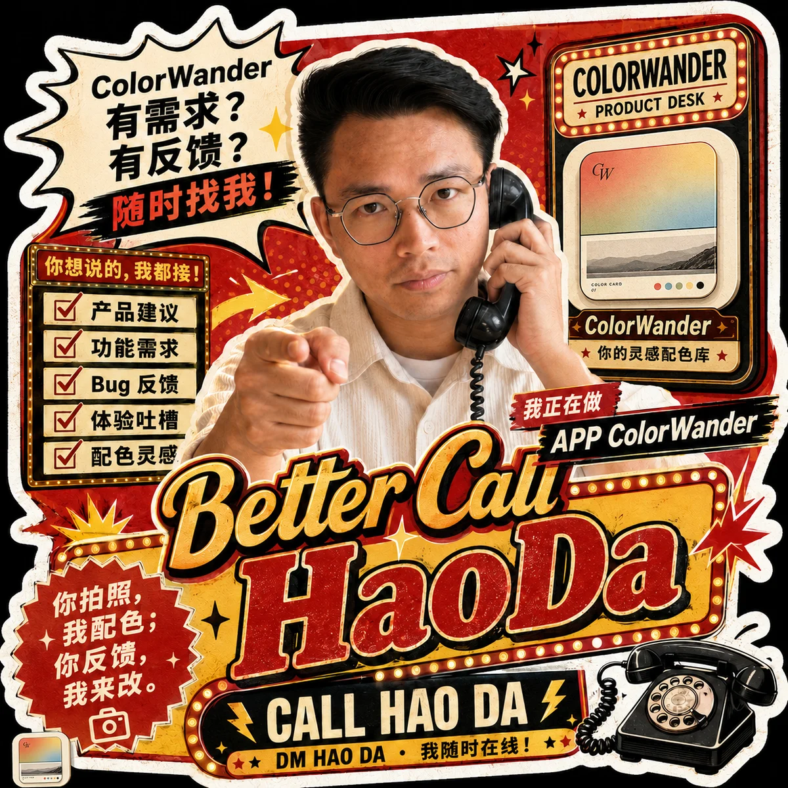

● 01 · about
关于我 who's behind this
前大厂产品经理，现独立开发者。前 3 个月做了很多没有用的小玩具，最近在「无用」和「商业」之间探索平衡。




● 02 · demoshow
用颜色看世界
从你的照片中提取颜色，作为相框背景，生成一张 ColorWalk 照片。
A photo, a color, a day.

● 02 · differentiation
差异化功能
- 自动加标注 — Location · Emoji · Time
- 文学时间模式
- 照片的时刻，自动匹配一句文学中的句子
- 相框 — 多种排版与画幅

● 05 · the gap from 50 to 80

想清楚自己想做的到底是几十分的产品，很重要。
● 10 · made with it
大家用它，做出了什么 made by the community








Thanks
朝色夕拾 · ColorWander
a photo, a color, a day.

加我微信 · 豪大
WeChat · 添加好友
下载 ColorWander
App Store · iOS

小红书 @ 噗大可
Xiaohongshu · 634901668